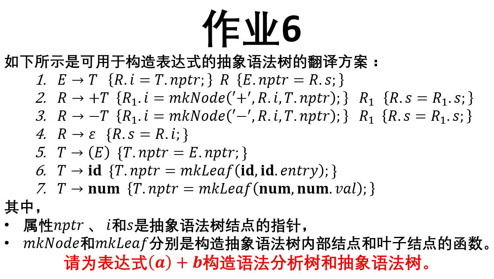

A compiler is computer software that transforms computer code written in one programming language (the source language) into another programming language (the target language).
Lecture-1: 引论 (PDF)
Lecture-2: 编译基础知识 (PDF, 最后修改时间:2018-05-30)
Lecture-3: 词法分析 (PDF, 最后修改时间:2018-05-02)
Lecture-4: 自上而下语法分析 (PDF, 最后修改时间:2018-05-14)
Lecture-5: 算符优先分析法 (PDF)
Lecture-6: LR语法分析技术 (PDF-1, PDF-2, PDF-3, PDF-4)
Lecture-7: 语法制导翻译及中间代码生成 (PDF, 最后修改时间:2018-06-14)
Lecture-8: 运行时数据区的管理 (PDF, 最后修改时间:2018-06-08)
Lecture-9: 代码生成 (PDF, 最后修改时间:2018-06-27)
1. 画出一个DFA的状态转换图, 并编写程序实现该DFA模拟算法 (时间: 2018-04-28)
2. 编程实现子集构造算法，实现NFA到DFA的转换 (时间: 2018-05-02)
3. 编程实现McMaughton-Yamada-Thompson算法，实现由正规式构造NFA (时间: 2018-05-02)
4. 编程实现Follow集合的计算 (时间: 2018-05-09)
5. 编程实现LR(0)项集族的计算 (时间: 2018-05-23)
6. 基于翻译方案，为表达式（a）+ b 画出语法分析树和抽象语法树 (时间: 2018-06-08) 
7. 撰写读书报告（3页A4纸,word）: 精读函数getReg的设计部分内容, 谈谈自己的体会。
| 实验名称 | 时间 | 实验目的与要求 |
|---|---|---|
| 词法分析程序设计 | 2018-05-17(第六、七节)~2018-05-24（第六、七节） | 设计一个词法分析程序实现对高级语言中的一种词素转成机器内码（二元组）的表示方式, （分析Java语言中的16进制整数） |
| 递归下降分析程序设计及语法分析中的错误处理 | 2018-05-24（第八、九节） | 设计一个递归下降分析程序实现对算术运算表达式进行语法分析并能报告程序中的错误信息 |
| 预测分析程序设计及语法分析中的错误处理 | 2018-05-31（第六、七节）~2018-06-07（第六、七节） | 构造算术运算表达式的预测分析表，设计一个预测分析程序实现对算术运算表达式进行语法分析并能报告程序中的错误信息 |
| 优先分析表及优先函数的使用 | 2018-06-14（第六、七节） | 设计一个程序利用优先分析表和优先函数实现算术运算表达式的计算，并实现优先分析表到优先函数的自动生成 |
| 语法制导翻译与中间代码四元式和目标程序的生成 | 2018-06-21（第六、七、八、九节） | 编写一个简单的编译程序，将赋值语句翻译成中间代码四元式或者汇编程序 |
In the research area of hardware and software systems, formal analysis and verification is the process of proving, checking or analyzing the correctness and performance of a system with respect to formal specifications or requirements.
Lecture-1: Propositional Logic (PDF, Latex)
Lecture-2: First-order Logic (PDF, Latex)
Lecture-3: Linear Temporal Logic (PDF, Latex)
Lecture-4: Computation Tree Logic
Lecture-5: Equivalences and Abstraction (PDF)
Lecture-6: Partial Order Reduction (PDF)
Lecture-7: Timed Automata (PDF)
Lecture-8: Hybrid Automata (PDF)